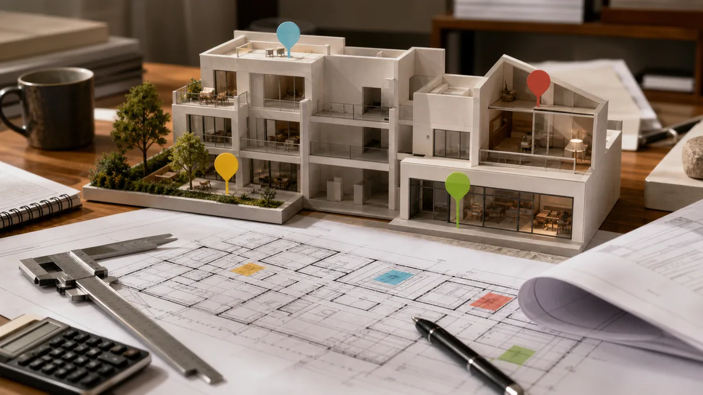

אחת הסוגיות המורכבות ביותר בניהול פרויקטים של התחדשות עירונית אינה קשורה דווקא לאחוזי הבנייה או למדיניות העירייה, אלא למתח הפנימי שנוצר בתוך הבניין. המתח הזה מגיע לשיאו בנקודה אחת: הפער בין הדירה הטיפוסית לדירה המיוחדת.
כאשר בניין ישן נכנס למסלול של פינוי-בינוי או תמ"א 38, המודל הקלאסי מציע נוסחת תמורה אחידה. אך בבניינים רבים קיימות דירות "מיוחדות" – דירות גן, דירות גג, או דירות הכוללות הצמדות היסטוריות כמו מחסנים גדולים וחצרות פרטיות. עבור בעלי נכסים אלו, נוסחת השוויון האריתמטית עלולה להתגלות כחוסר צדק כלכלי.
מלכודת "התמורה האחידה"
הנטייה הטבעית של נציגויות דיירים היא לשאוף לשוויון מוחלט: "כולם מקבלים תוספת של 12 מ"ר, מרפסת וחניה". על הנייר, זהו מנגנון שמונע סכסוכים, אך בפועל הוא מתעלם מנקודת המוצא של הנכס (ה-Existing).
מנקודת מבט של ניהול פרויקט, התעלמות משווי הדירות המיוחדות היא מתכון בטוח לעיכובים של שנים. בעל דירה שהביא לפרויקט נכס עם חצר בטאבו בשטח של 80 מ"ר, לא יוכל להסכים לקבל דירה טיפוסית בקומה 3, גם אם היא חדשה. מבחינתו, מדובר בירידת ערך ריאלית או בשחיקה של הנכס הייחודי שלו.
מנגנון הגישור: בין שמאות לניהול מו"מ
כדי לשחרר את הפקק הזה, נדרש שילוב בין עבודה שמאית קפדנית לבין ניהול אסטרטגי של המשא ומתן. התהליך כולל לרוב שלושה נתיבים מרכזיים:
קביעת "שווי מצב נכנס": עוד לפני בחירת היזם, על הפרויקט להגדיר מהו השווי היחסי של כל דירה. דירה מיוחדת המביאה איתה "נדוניה" של הצמדות צריכה לקבל הכרה בערך העודף שלה.
תמורות יצירתיות "בעין": מאחר שלא תמיד ניתן לייצר בדיוק את אותו סוג נכס בבניין החדש (למשל, בבנייה רוויה קשה לעיתים לייצר דירות גן באותו קנה מידה), הפתרון עובר דרך שדרוג קומות או הקצאת דירות פרימיום (מיני-פנטהאוזים) לבעלי הדירות המיוחדות.
שימוש בתשלומי איזון: במקרים בהם הפער התכנוני גדול מדי, המנגנון הכלכלי מאפשר תשלומי איזון מהיזם לבעלי הדירות, כדי לגשר על הפער בין הערך שהביאו לבין הדירה שקיבלו בפועל.
סוגיית זכויות הבנייה הבלתי מנוצלות
אחד האתגרים המרתקים בניהול התהליך נוגע לבעלי דירות גג עם זכויות בנייה שלא מומשו. האם דייר שזכאי לבנות חדר על הגג אך לא עשה זאת, זכאי לפיצוי? הפסיקה והפרקטיקה בתחום התגבשו סביב ההבנה שזכויות בנייה קיימות הן נכס כלכלי לכל דבר. ניהול נכון של הפרויקט דורש התייחסות לפוטנציאל הזה, גם אם הוא טרם מומש, כדי למנוע טענות מוצדקות של "דייר סרבן".
התפקיד של ניהול התהליך
תפקיד היועץ המלווה את הדיירים בסוגיה זו הוא כפול:
כלפי פנים: להסביר לשאר בעלי הדירות כי הענקת תמורה עודפת לדירה מיוחדת אינה "אפליה", אלא הכרה במציאות קניינית. ללא הסכמה זו, הפרויקט כולו עלול לעמוד בפני תביעות ועיכובים בערכאות משפטיות.
כלפי חוץ: לוודא שהיזם והאדריכל מייצרים פתרונות תכנוניים שממקסמים את ערך הדירות המיוחדות, ובכך רותמים את בעליהן להצלחת הפרויקט במקום להפיכתם לחסמים.
בשורה התחתונה
כשיש בבניין דירות גג, דירות גן, או דירות עם הצמדות היסטוריות בטאבו — נוסחת "תמורה אחידה" פשוט לא עובדת. הפתרון הוא לייצר מראש "שווי מצב נכנס" מקצועי לכל דירה, להסכים על מנגנון תמורות דיפרנציאלי, ולעגן אותו בנספח כתוב לפני שהיזם חותם. בלי זה — הפרויקט נתקע בתביעות.
שאלות נפוצות
האם בעל דירת גן זכאי אוטומטית לדירת גן חדשה? לא אוטומטית. זה תלוי בתכנון החדש ובמה שאפשר לייצר בפועל בבניין הרווי. הפתרונות הנפוצים: דירת גן חדשה אם אפשר, או קומה נמוכה עם תמורה מוגדלת, או תשלומי איזון. מה שחשוב — שהמנגנון יהיה כתוב בנספח לפני שחותמים.
דירת הגג שלי עם זכויות בנייה שלא מימשתי — האם זה שווה משהו בעסקה? כן. זכויות בנייה קיימות שלא מומשו הן נכס כלכלי, גם אם לא בניתם חדר על הגג בפועל. שמאי מנוסה יודע לכמת את זה, והיזם חייב לקחת את זה בחשבון בתמורה — אחרת יש לכם עילה לא לחתום.
יש לי הצמדה של 80 מ"ר חצר בטאבו. מה קורה איתה? בדיקה ראשונה: לוודא שההצמדה רשומה פורמלית בנסח הטאבו (ולא רק "שימוש בפועל"). אם היא רשומה — זה חלק מהשווי הנכנס שלכם, ואתם זכאים לתמורה שמשקפת את זה, בדרך כלל בדמות דירה משודרגת, תוספת שטח, או תשלום איזון.
מה קורה אם שאר הדיירים מתנגדים לתת לי תמורה מיוחדת? זה תרחיש שכיח. התפקיד של היועץ הוא להסביר לכלל הדיירים שהכרה בערך הנכנס של דירה מיוחדת היא לא "אפליה" אלא הגנה משפטית על הפרויקט כולו — בלעדיה הפרויקט חשוף לתביעות של הדייר המיוחד ולעיכוב של כולם.
דיסקליימר
המידע במאמר הוא כללי ואינו מהווה ייעוץ משפטי/שמאות/מס. בכל מקרה מומלץ להיוועץ באנשי מקצוע לפי נסיבות הפרויקט.
יש לכם דירה מיוחדת? בואו נדבר לפני שחותמים
אם יש בבניין שלכם דירת גג, דירת גן, או דירה עם הצמדות בטאבו — שלחו לנו את כתובת הבניין ומספר הדירה, ואנחנו נעבור איתכם על מה שצריך לוודא בנספח התמורות לפני כל חתימה.
רוצים ייעוץ אישי בנושא?
אני עוזר לבעלי דירות ויזמים לנווט בפרויקטי התחדשות עירונית, מהשלב הראשון של בדיקת ההיתכנות ועד קבלת המפתח.